area=6336
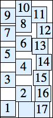
area=7182
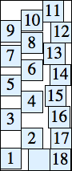
area=8784
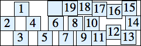
area=10620
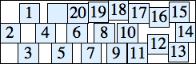
area=12159
1.
1. Consider a collection of n+1 squares of side n where the kth square and the (k+1)st square share a boundary of length k. What is the smallest rectangle they can be packed into? What is the smallest square they can be packed into? What are the best answers you can find for n=100?
2.
Consider a collection of n squares of sides 1, 2, 3, . . . n where the kth square and the (k+1)st square share a boundary of length at least 1. What is the smallest square they can be packed into? What is the smallest rectangle they can be packed in? Does it always have one side n? What if the boundary between the kth square and the (k+1)st square has length k? What if the kth square and the (k+1)st square share a midpoint of a side? What are the best answers you can find for n=100?
3.
Consider a collection of n squares of side n where the kth square and the (k+1)st square overlap in a square of side k, and no other squares overlap. What is the smallest rectangle they can be packed into? What is the smallest square they can be packed into? What are the best answers you can find for n=100?
4.
Apparently 2 squares each of sides 1, 2, 3, . . . n can usually be packed inside the smallest integer side square possible from area constraints. Can anyone find a counterexample? How about n=18, which would only leave 7 unit squares of waste?
Here we make it a little harder and insist that the two squares of side k no touch each other, even at corners. For which value of n it is still possible to pack these 2n squares inside the smallest possible square? What is the largest decimal part that √(n(n+1)(2n+1)/3) can have and still have such a packing?
5.
What is the smallest square that contains non-overlapping squares with sides equal to the distinct fractions in (0,1] with denominators no larger than n?
6.
What is the smallest square rotated 45o that contains non-overlapping non-rotated squares with sides 1, 2, 3, . . . n?
1.
Here are the best known results for rectangles:
| n=1 area=2 (DL) | n=2 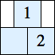 area=16 | n=3 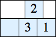 area=54 | n=4 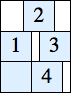 area=108 | n=5 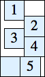 area=209 | n=6 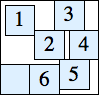 area=380 | n=7 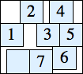 area=550 | n=8 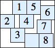 area=837 |
| n=9 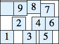 area=1131 | n=10 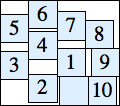 area=1554 | n=11 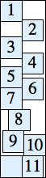 area=2093 | n=12 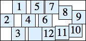 area=2736 | n=13 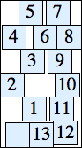 area=3476 | n=14 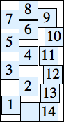 area=4230 | n=15 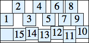 area=5250 |
| n=16 area=6336 | n=17 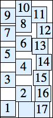 area=7182 | n=18 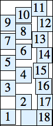 area=8784 | n=19 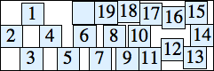 area=10620 | n=20 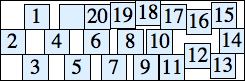 area=12159 |
| n=21 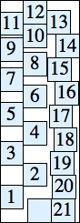 area=14058 (JR) | n=22 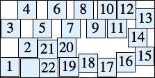 area=16200 (JR) | n=23 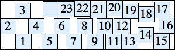 area=18469 (JR) | n=24 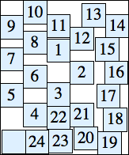 area=20856 (JR) | n=25 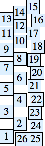 area=23375 (JR) |
| n=26 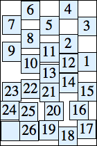 area=26600 (JR) | n=27 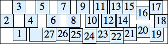 area=29406 (JR) | n=28 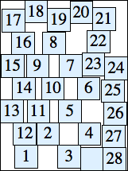 area=32970 (JR) | n=29 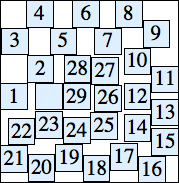 area=36284 (JR) |
Johan de Ruiter also found the smallest perimeters of rectangles that pack these squares.
Here are the best known results for squares:
| n=1 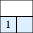 side=2 | n=2 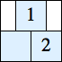 side=4 | n=3 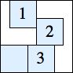 side=8 | n=4 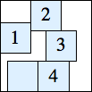 side=12 | n=5 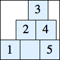 side=15 | n=6 side=20 | n=7 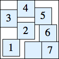 side=24 |
| n=8 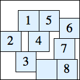 side=31 | n=9 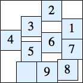 side=36 | n=10 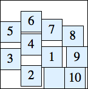 side=42 | n=11 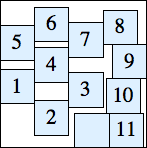 side=47 | n=12 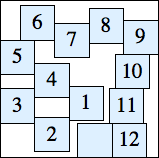 side=55 |
| n=13 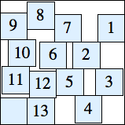 side=60 | n=14 side=69 | n=15 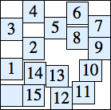 side=75 (DL) | n=16 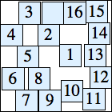 side=81 (DL) | n=17 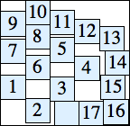 side=89 (DL) |
| n=18 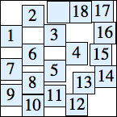 side=96 (DL) | n=19 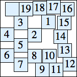 side=106 (DL) | n=20 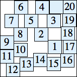 side=114 (DL) | n=21 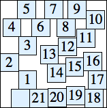 side=123 (DL) | n=22 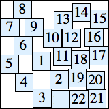 side=131 (DL) |
| n=23 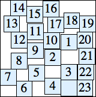 side=139 (DL) | n=24 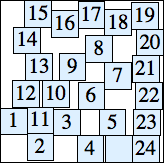 side=147 (DL) | n=25 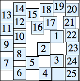 side=156 (DL) | n=26 side=165 (DL) | n=27 side=174 (DL) |
| n=28 side=184 (DL) | n=29 side=193 (DL) | n=30 side=205 (DL) | n=31 side=216 (DL) |
Here are the best-known results for squares. The most likely to be improved are n=14 and n=20.
| n=1 side=1 | n=2 side=3 | n=3 side=5 | n=4 side=7 | n=5 side=9 | n=6 side=11 | n=7 side=13 | n=8 side=15 |
n=9 side=18 | n=10 side=21 | n=11 side=24 | n=12 side=27 | n=13 side=30 |
| n=14 side=35 | n=15 side=38 | n=16 side=42 | n=17 side=45 |
| n=18 side=48 | n=19 side=52 | n=20 side=57 |
| n=21 side=60 | n=22 side=64 | n=23 side=68 |
| n=24 side=73 (BZ) | n=25 side=78 | n=26 side=82 |
| n=27 side=86 | n=28 side=90 | n=29 side=94 |
Here are the best-known results for rectangles:
n=1 area=1 | n=2 area=9 | n=3 area=30 | n=4 area=70 | n=5 area=135 | n=6 area=273 | n=7 area=392 |
| n=8 area=667 | n=9 area=888 | n=10 area=1242 | n=11 area=1716 (MM) |
| n=12 area=2412 (MM) | n=13 area=2844 (CP) | n=14 area=3840 (CP) |
| n=15 area=4558 (CP) | n=16 area=5904 (CP) | n=17 area=6460 (CP) |
| n=18 area=7957 (CP) | n=19 area=9672 (CP) | n=20 area=11682 (CP) |
Here is the best-known packing for n=100:
Here are the best-known results for squares:
| n=1 side=1 | n=2 side=3 | n=3 side=6 | n=4 side=10 | n=5 side=15 | n=6 side=21 | n=7 side=22 (CP) |
| n=8 side=29 (CP) | n=9 side=35 (CP) | n=10 side=40 (CP) | n=11 side=47 (CP) |
| n=12 side=57 (CP) | n=13 side=58 (CP) | n=14 side=64 (CP) |
| n=15 side=70 (CP) | n=16 side=82 (CP) | n=17 side=86 (CP) |
| n=18 side=94 (CP) | n=19 side=101 (CP) | n=20 side=112 (CP) |
Here are the known packings:
n=8 area=(20.20)2 | n=12 area=(36.06)2 | n=13 area=(40.47)2 |
| n=14 area=(45.06)2 | n=16 area=(54.70)2 | n=17 area=(59.75)2 (BZ) |
| n=19 area=(70.29)2 (MM) | n=20 area=(75.76)2 (BZ) |
Here are the best-known packings:
| n=1 side = 1 | n=2 side = 1 + 1/2 = 1.500 | n=3 side = 1 + 2/3 = 1.666+ | n=4 side = 1 + 3/4 = 1.750 | n=5 side = 3/4 + 2/3 + 3/5 = 2.016+ |
| n=6 side = 4/5 + 3/4 + 2/3 = 2.216+ | n=7 side = 5/7 + 4/7 + 3/4 + 1/2 = 2.535+ (MM) | n=8 side = 5/7 + 4/5 + 3/5 + 2/3 = 2.780+ (MM) |
| n=9 side = 7/8 + 5/6 + 3/4 + 1/2 + 1/7 = 3.101+ (MM) | n=10 side = 8/9 + 5/6 + 2/3 + 1/2 + 3/7 = 3.317+ (MM) |
Here are the best-known packings:
| n=1 side = √2 | n=2 side = (9/4) √2 | n=3 side = (15/4) √2 | n=4 side = (21/4) √2 | n=5 side = (41/6) √2 | n=6 side = (17/2) √2 | n=7 side = (31/3) √2 (MM) |
| n=8 side = (37/3) √2 (MM) | n=9 side = (29/2) √2 (MM) | n=10 side = (167/10) √2 (MM) | n=11 side = 19 √2 (MM) |
| n=12 side = (213/10) √2 (MM) | n=13 side = (47/2) √2 (MM) | n=14 side = 26 √2 (MM) |
| n=15 side = (115/4) √2 (MM) | n=16 side = (63/2) √2 (MM) |
| n=17 side = (137/4) √2 (MM) | n=18 side = 37 √2 (MM) |
| n=19 side = (239/6) √2 (MM) | n=20 side = (171/4) √2 (MM) |
If you can extend any of these results, please e-mail me. Click here to go back to Math Magic. Last updated 10/12/17.